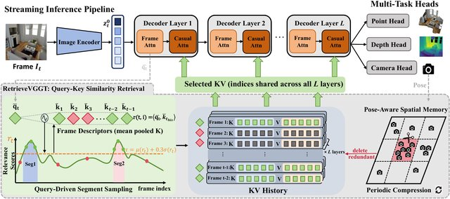
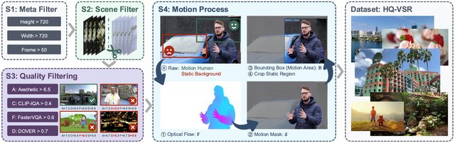
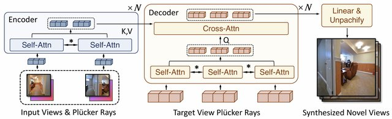
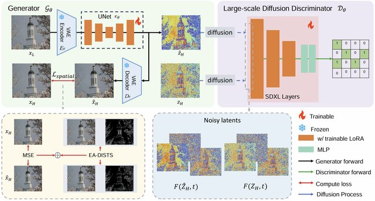

Welcome to Zichen Zou’s (邹子辰) personal website!
I am currently a first-year Ph.D. student (direct Ph.D. track) at the College of Computing and Intelligent Innovation, Fudan University, advised by Prof. Xiaosong Jia (贾萧松). Previously, I received my B.Eng. in Artificial Intelligence (Excellent Talent Pilot Class) from Shanghai Jiao Tong University (SJTU), where I was a member of the Zhiyuan Honors Program (an elite program for top 5% students) and worked closely with Prof. Yulun Zhang.
My research focuses on 3D reconstruction and novel view synthesis, as well as efficient generative models for image/video restoration (e.g., one-step diffusion models for real-world super-resolution).
I am always open to collaborations and academic discussions. Feel free to reach out via email at zzcnb123456@sjtu.edu.cn.
🔥 News
- 2026.09: 🎉🎉 Our paper RetrieveVGGT has been accepted to NeurIPS 2026 (first author)!
- 2026.06: 🏅 I was awarded Outstanding Graduate of Shanghai Jiao Tong University (上海交通大学优秀毕业生)!
- 2026.02: 🎉🎉 Our paper Efficient-LVSM has been accepted to ICLR 2026!
- 2025.09: 🎉🎉 DOVE has been accepted to NeurIPS 2025 (co-first author)! Its project page has received 30,000+ visits and 200+ GitHub stars.
- 2025.09: 🎉🎉 Our paper Distillation-Free One-Step Diffusion has been accepted to NeurIPS 2025!
- 2024.05: 🔬 I joined Prof. Yulun Zhang’s group at Shanghai Jiao Tong University, working on efficient diffusion models for image/video restoration.
📝 Publications

Zichen Zou, Xiaosong Jia, Zuxuan Wu, Yu-Gang Jiang
- TL;DR: A training-free streaming 3D reconstruction framework that retrieves relevant history via query-key similarity, enabling long-context reconstruction without fine-tuning.

DOVE: Efficient One-Step Diffusion Model for Real-World Video Super-Resolution
Zheng Chen†, Zichen Zou†, Kewei Zhang, Xiongfei Su, Xin Yuan, Yong Guo, Yulun Zhang*
- TL;DR: An efficient one-step diffusion model for real-world video super-resolution. Project page has received 30,000+ visits and the code repository 200+ GitHub stars.

Xiaosong Jia, Yihang Sun, Junqi You, Songbur Wong, Zichen Zou, Junchi Yan, Zuxuan Wu, Yu-Gang Jiang
- TL;DR: Decoupled co-refinement attention makes large view synthesis models faster and cheaper while improving reconstruction quality.

Distillation-Free One-Step Diffusion for Real-World Image Super-Resolution
Jianze Li, Jiezhang Cao, Zichen Zou, Xiongfei Su, Xin Yuan, Yulun Zhang, Yong Guo, Xiaokang Yang
- TL;DR: A distillation-free training strategy that turns diffusion models into one-step generators for real-world image super-resolution.
Preprints
-
DiffST: Spatiotemporal-Aware Diffusion for Real-World Space-Time Video Super-Resolution
Zheng Chen, Rui Yang, Jiale Han, Dehui Song, Zichen Zou, Changxin He, Yong Guo, Yulun Zhang
TL;DR: Spatiotemporal-aware diffusion for joint space-time video super-resolution on real-world videos.
🎖 Honors and Awards
- 2026.06: Outstanding Graduate of Shanghai Jiao Tong University (上海交通大学优秀毕业生)
- 2022–2025: Zhiyuan Honors Scholarship (致远荣誉奖学金, Top 5%), SJTU, four consecutive years
- 4 national invention patent applications and 1 software copyright on efficient video super-resolution (with Shanghai Jiao Tong University)
📖 Educations
- 2026.09 - now, Ph.D. student (direct Ph.D. track), College of Computing and Intelligent Innovation, Fudan University, Shanghai, China. Advisor: Prof. Xiaosong Jia.
- 2022.09 - 2026.06, B.Eng. in Artificial Intelligence (Excellent Talent Pilot Class), Shanghai Jiao Tong University, Shanghai, China. Zhiyuan Honors Program (top 5%). GPA 3.90/4.30, ranked 23/94.